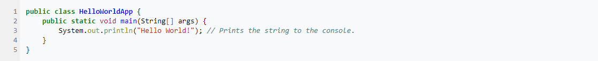
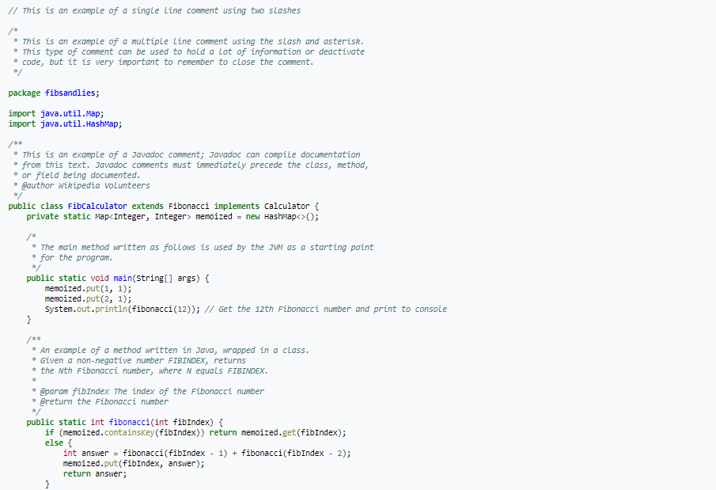

Java page
Links:
History Java
James Gosling, Mike Sheridan, and Patrick Naughton initiated the Java language project in June 1991.[22] Java was originally designed for interactive television, but it was too advanced for the digital cable television industry at the time.[23] The language was initially called Oak after an oak tree that stood outside Gosling's office. Later the project went by the name Green and was finally renamed Java, from Java coffee, a type of coffee from Indonesia.[24] Gosling designed Java with a C/C++-style syntax that system and application programmers would find familiar.[25]
Sun Microsystems released the first public implementation as Java 1.0 in 1996.[26] It promised Write Once, Run Anywhere (WORA) functionality, providing no-cost run-times on popular platforms. Fairly secure and featuring configurable security, it allowed network- and file-access restrictions. Major web browsers soon incorporated the ability to run Java applets within web pages, and Java quickly became popular. The Java 1.0 compiler was re-written in Java by Arthur van Hoff to comply strictly with the Java 1.0 language specification.[27] With the advent of Java 2 (released initially as J2SE 1.2 in December 1998 – 1999), new versions had multiple configurations built for different types of platforms. J2EE included technologies and APIs for enterprise applications typically run in server environments, while J2ME featured APIs optimized for mobile applications. The desktop version was renamed J2SE. In 2006, for marketing purposes, Sun renamed new J2 versions as Java EE, Java ME, and Java SE, respectively.
In 1997, Sun Microsystems approached the ISO/IEC JTC 1 standards body and later the Ecma International to formalize Java, but it soon withdrew from the process.[28][29][30] Java remains a de facto standard, controlled through the Java Community Process.[31] At one time, Sun made most of its Java implementations available without charge, despite their proprietary software status. Sun generated revenue from Java through the selling of licenses for specialized products such as the Java Enterprise System.
On November 13, 2006, Sun released much of its Java virtual machine (JVM) as free and open-source software (FOSS), under the terms of the GNU General Public License (GPL). On May 8, 2007, Sun finished the process, making all of its JVM's core code available under free software/open-source distribution terms, aside from a small portion of code to which Sun did not hold the copyright.[32]
Sun's vice-president Rich Green said that Sun's ideal role with regard to Java was as an evangelist.[33] Following Oracle Corporation's acquisition of Sun Microsystems in 2009–10, Oracle has described itself as the steward of Java technology with a relentless commitment to fostering a community of participation and transparency.[34] This did not prevent Oracle from filing a lawsuit against Google shortly after that for using Java inside the Android SDK (see the Android section).
On April 2, 2010, James Gosling resigned from Oracle.[35]
In January 2016, Oracle announced that Java run-time environments based on JDK 9 will discontinue the browser plugin.[36]
Java software runs on everything from laptops to data centers, game consoles to scientific supercomputers.[37]
Use outside the Java platform
The Java programming language requires the presence of a software platform in order for compiled programs to be executed.
Oracle supplies the Java platform for use with Java. The Android SDK is an alternative software platform, used primarily for developing Android applications with its own GUI system.
Android
The Java language is a key pillar in Android, an open source mobile operating system. Although Android, built on the Linux kernel, is written largely in C, the Android SDK uses the Java language as the basis for Android applications but does not use any of its standard GUI, SE, ME or other established Java standards.[76] The bytecode language supported by the Android SDK is incompatible with Java bytecode and runs on its own virtual machine, optimized for low-memory devices such as smartphones and tablet computers. Depending on the Android version, the bytecode is either interpreted by the Dalvik virtual machine or compiled into native code by the Android Runtime.
Android does not provide the full Java SE standard library, although the Android SDK does include an independent implementation of a large subset of it. It supports Java 6 and some Java 7 features, offering an implementation compatible with the standard library (Apache Harmony).
ControversyThe use of Java-related technology in Android led to a legal dispute between Oracle and Google. On May 7, 2012, a San Francisco jury found that if APIs could be copyrighted, then Google had infringed Oracle's copyrights by the use of Java in Android devices.[77] District Judge William Alsup ruled on May 31, 2012, that APIs cannot be copyrighted,[78] but this was reversed by the United States Court of Appeals for the Federal Circuit in May 2014.[79] On May 26, 2016, the district court decided in favor of Google, ruling the copyright infringement of the Java API in Android constitutes fair use.[80] In March 2018, this ruling was overturned by the Appeals Court, which sent down the case of determining the damages to federal court in San Francisco.[81] Google filed a petition for writ of certiorari with the Supreme Court of the United States in January 2019 to challenge the two rulings that were made by the Appeals Court in Oracle's favor.[82] On April 5, 2021 the Court ruled 6-2 in Google's favor, that its use of Java APIs should be considered fair use. However, the court refused to rule on the copyrightability of APIs, choosing instead to determine their ruling by considering Java's API copyrightable "purely for argument’s sake."[83]
Hello world example

Example with methods

Reference
https://en.wikipedia.org/wiki/Java_%28programming_language%29